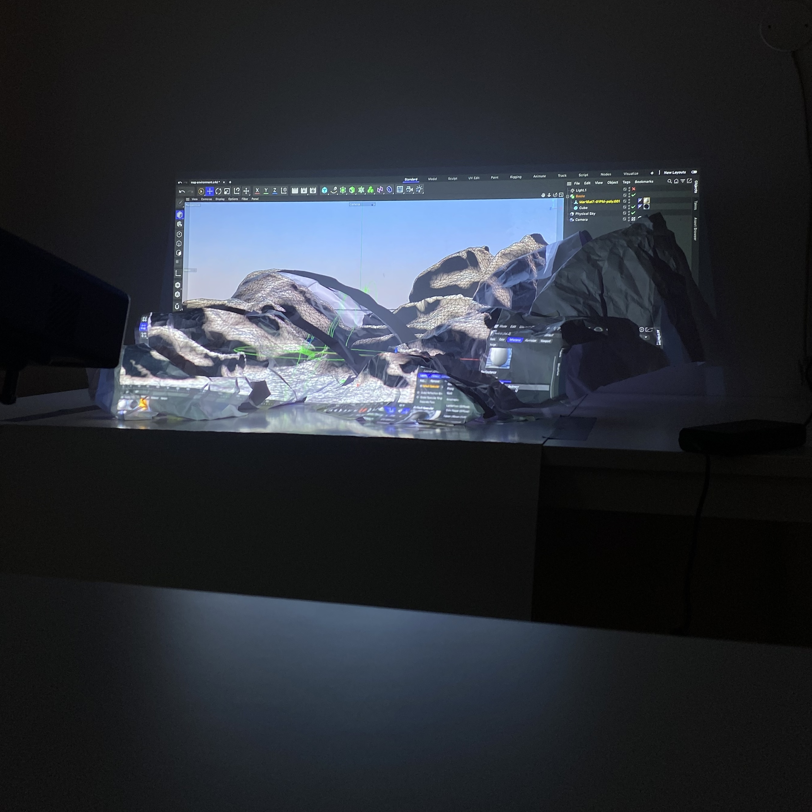
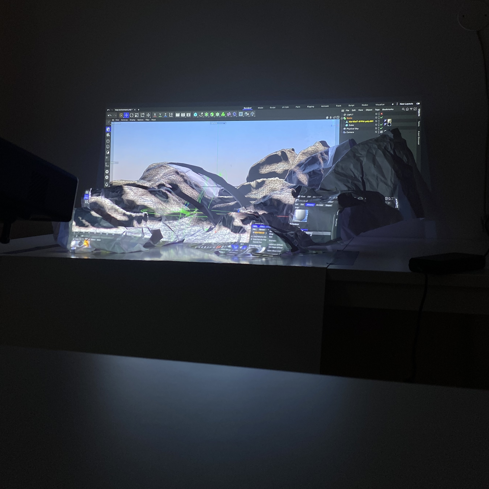

Lilla Samvetet
(The Little Conscience), 2024
The result of a interdisciplinary collaboration between researchers at the Beijer Institute, Svenskt Tenn, and Beckmans College of Design.
The Beijer Institute has conducted immense research on the risks and opportunities associated with artificial intelligence, and the goal of this project was to find new ways convey this knowledge both intellectually and emotionally, through visual communication.
We did this by imagining a future where artificial intelligence is given a place inside of the human intellect. In such an amalgam of intelligence, we think that AI could save the flawed human from acting unsustainably and selfishly. Like Jiminy Cricket, the AI would take on the role of a conscience. But unlike the little cricket, this new conscience is not something you can simply wave away. Instead it is super strong, and impossible to betray.
Lilla Samvetet was made in collaboration with Elvin Odelholm.
 
